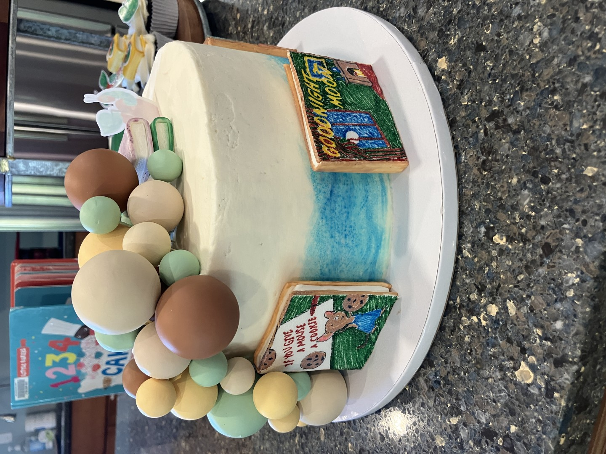
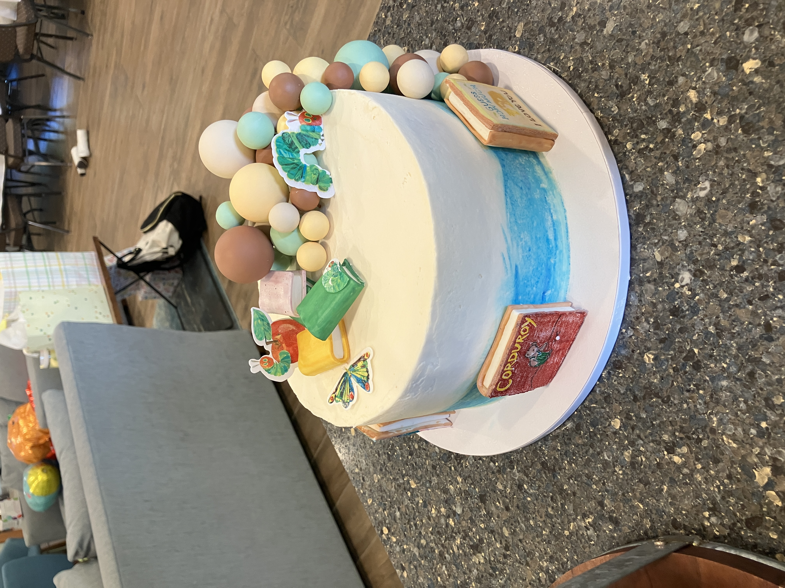
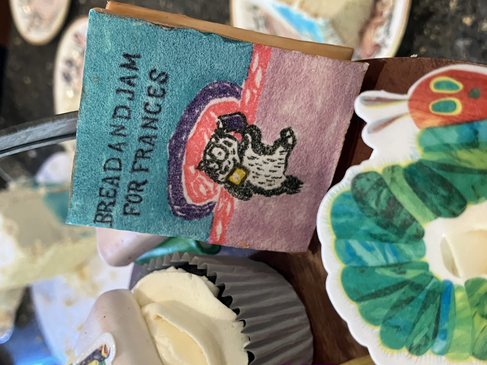
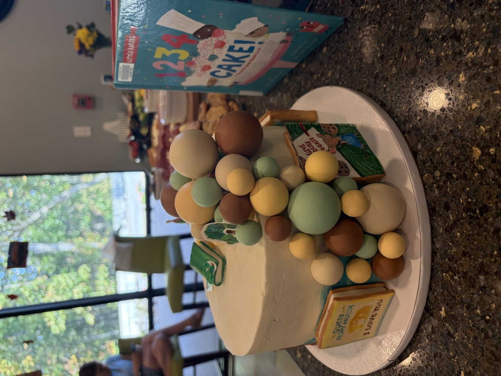
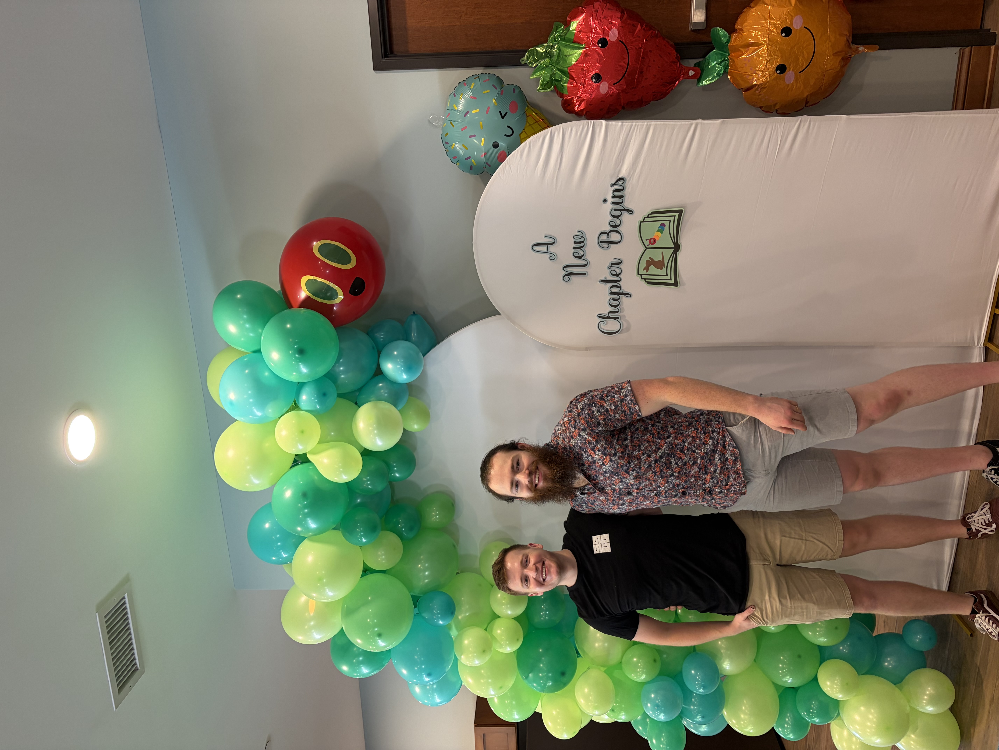
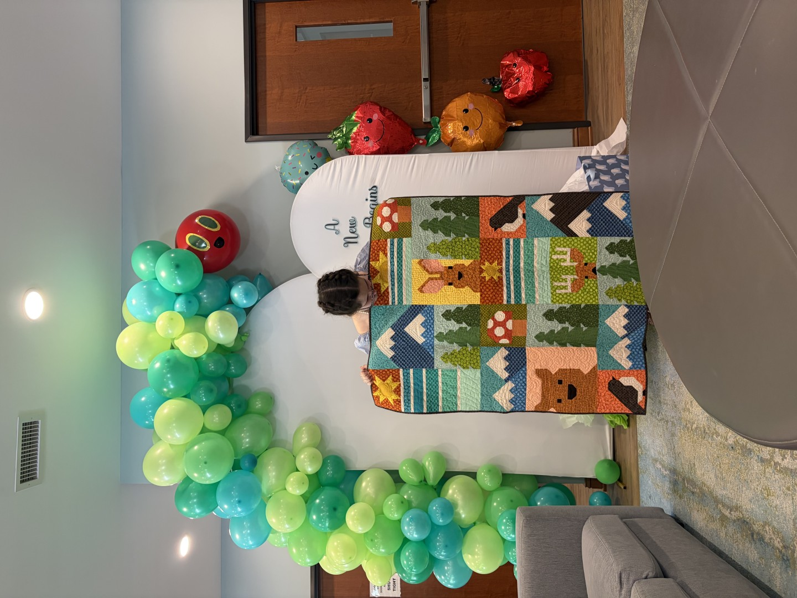
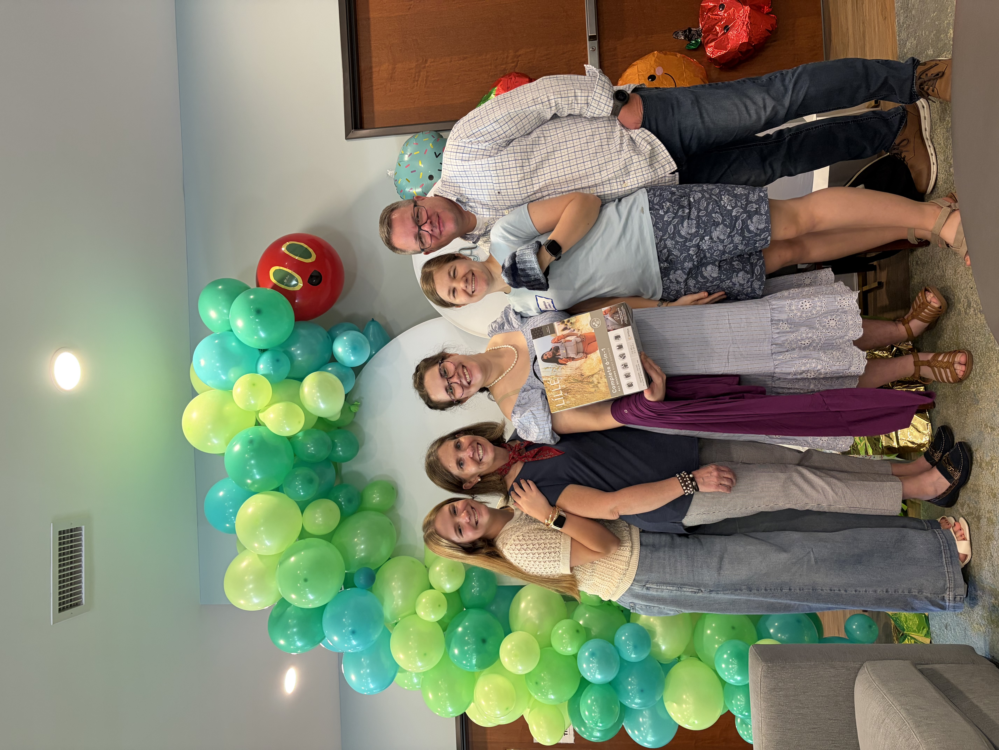

Our Baby Shower Pictures
2026-10-10This fall Katie Beth and I are awaiting the birth of our first child. In anticipation of his arrival, my mother and our friend Ashley threw Katie Beth a baby shower themed after children's books. Some of the decorations were so wonderful I decided to post them here.
A local friend of my mom crafted this delicious vanilla cake, which was decorated with hand-painted fondant books. A true work of art!




My boy Isaac and I put together this balloon arch based on The Very Hungry Caterpillar by Eric Carle. I didn't think we needed to get an electic pump but Isaac got one anyway, which was the right move in retrospect. Katie Beth sat under it while she opened gifts, which included this gorgeous quilt from a church friend and a knitted baby cap from Katie Beth's sister Rebekah.



A a shower game, guests used Play-Doh to craft little babies, which KB judged for creativity. This pumpkin-capped creation came in first place. Collette and I collatborated on this anatomically correct baby, which has not had the umbilical cord clamped yet.